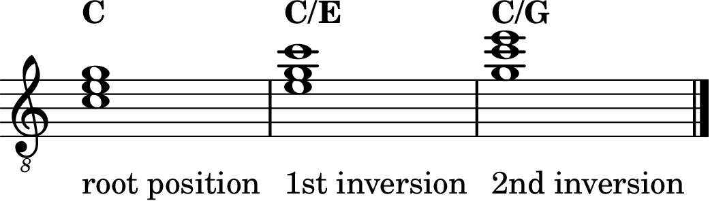

Level 2 · Chapter 22
Music Theory: Triad Inversions
You have inverted intervals twice now: the Perfect family in Level 1, and the 3rds two chapters ago. An interval is two notes, so inverting it is one move: flip the lower note up an octave. But a triad has three notes. What happens when you flip a chord?
You even know a two-note preview of the answer. Back in Level 1 you inverted the power chord, and the 5th took over the bottom. The chord kept its name; only its floor changed. Triads work exactly the same way, and with three notes the wheel has one more stop.
Rotate the stack
Take C Major in its stacked form: C on the bottom, E in the middle, G on top. Flip the bottom note up an octave, the same move you have made with every interval. The C jumps up, and the stack now reads E–G–C.
Is it still C Major? Count the members: E, G, and C. The same three notes as always. The voicing chapters settled this question for good: which octave a note sits in never changes what chord you are playing. E–G–C is C Major. But one real thing did change: the note standing on the floor.
Rotate again (flip the E up an octave) and you get G–C–E. Same three members, and now G holds the floor. Rotate a third time and C lands back on the bottom, an octave above where it started. Three notes, three possible floors, and then the wheel comes back around.
The three positions
Each floor gets a name:
- Root position: the root is the lowest note (C–E–G). Every triad you have played so far.
- 1st inversion: the 3rd is the lowest note (E–G–C).
- 2nd inversion: the 5th is the lowest note (G–C–E).

The root is not always the bass
This forces a distinction that never mattered before. The root is the note that names the chord and anchors its stack of 3rds. For C Major that is C, in every position, forever. The bass note is simply whichever chord tone happens to be lowest at the moment. In root position the root and the bass are the same note, which is why you never needed two words. In an inversion they part ways: in E–G–C, the root is still C, but the bass is E.
How charts write it: slash chords
Songbooks use a slash symbol to specify a bass note: C/E, read “C over E.” The letter before the slash names the chord; the letter after it names the bass note. When that bass note is a chord tone, the slash symbol names an inversion: C/E is C Major in 1st inversion, and C/G is C Major in 2nd inversion. (A slash can also specify a non-chord bass note; that wider use is outside this Level 2 triad-inversion lesson.) If you have ever met a G/B or a D/F♯ in a chord chart and wondered what it wanted from you, the mystery is solved: G Major with its 3rd on the floor, D Major with its 3rd on the floor.
Look inside the flipped stack
Root position is two 3rds stacked. What is inside the inversions? You own every tool needed to measure them.
1st inversion, E–G–C: E up to G is a minor 3rd, and G up to C is a Perfect 4th. And the outer span, E up to C, is a minor 6th, exactly what the inversion rules promised: the Major 3rd C–E, flipped.
2nd inversion, G–C–E: G up to C is a Perfect 4th, C up to E is the familiar Major 3rd, and the outer span G up to E is a Major 6th, the flipped minor 3rd E–G.
So the 6ths you learned two chapters ago were not a detour. They are the outsides of inverted triads. A triad is a stack of 3rds only in root position; rotate it and 4ths and 6ths appear inside, which is part of why each position has a sound of its own.
Minor triads rotate the same way
Nothing here is special to Major. A minor (A–C–E) rotates to C–E–A, written Am/C, and then to E–A–C, written Am/E. The root stays A the whole time; the floor makes the rounds.
Hear it
All three positions of C Major are hiding inside one grip you have played for years: the open C chord.
- Root position: pick strings 5-4-3 of the open C chord (A string 3rd fret, D string 2nd fret, open G). C–E–G, root on the floor. Solid, settled, home.
- 1st inversion: pick strings 4-3-2 (D string 2nd fret, open G, B string 1st fret). E–G–C. Same chord, standing on its 3rd: a little lighter on its feet.
- 2nd inversion: pick strings 3-2-1 (open G, B string 1st fret, open high e). G–C–E. Standing on its 5th: open, floating, a chord leaning forward.
One strummed C chord contains the whole wheel. Play the three slices slowly, low to high, and listen to the floor climb while the chord's name never changes.
Try it yourself
For each stack, name the chord, name the position, and write the slash symbol if it needs one.
- G–B–D
- B–D–G
- G–C–E
- E–A–C
Answer key
- G Major, root position. The plain symbol G already says it.
- G Major, 1st inversion: G/B (the 3rd, B, is on the floor).
- C Major, 2nd inversion: C/G.
- A minor, 2nd inversion: Am/E (the 5th, E, is on the floor).
A triad is not one fixed tower; it is a little wheel. Three notes, three floors, one name. The root does the naming and the bass does the standing, and from now on those are two different jobs.